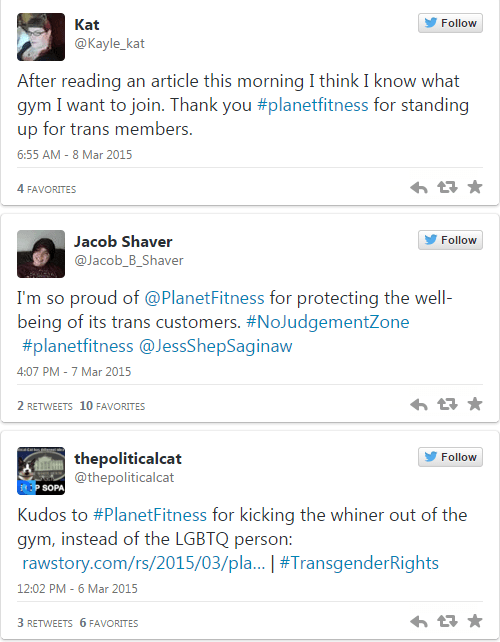

< < < Back
Planet Fitness Kicks A Woman Out For Refusing To Get Naked In Front Of A Man – Return Of Kings
The march to give transgendered individuals preferential treatment and special privileges in western society continues to grow. Most recently, a Planet Fitness in Midland, Michigan canceled a female’s membership because she complained about the facility allowing a transgendered male to use the female locker room.
48-year-old Yvette Cormier, the woman who voiced her concern about the situation, freaked out about seeing a man in the woman’s locker room, as any woman would. When she alerted the front desk about what she’d seen, she was told that the person identified as a woman and was, thus, allowed to use the female locker room.
Cormier was anything but satisfied with the response (or lack thereof) so she took it one step further and took her grievance to the fitness center’s corporate office .and was told the Planet fitness was a “no judgement zone.” They confirmed that the company would allow the cross-sexual individual to continue using the locker room.
Planet Fitness in Midland, MI
Undeterred, Cormier began warning other female members of the transgender’s presence in their locker room, and as a result her membership was cancelled. The powers that be dug their heels in and released a statement that explained their decision to kick out a female member who was uncomfortable with having to undress in front of a person who was born as a male:
Planet Fitness is committed to creating a non-intimidating, welcoming environment for our members. Our gender identity non-discrimination policy states that members and guests may use all gym facilities based on their sincere self-reported gender identity. The manner in which this member expressed her concerns about the policy exhibited behavior that management at the Midland club deemed inappropriate and disruptive to other members, which is a violation of the membership agreement and as a result her membership was cancelled.
Predictably, Planet Fitness’s decision was met with overwhelming approval. Cormier has been labeled as “ignorant” and “transgenderphobic” while the wannabe tranny, who identifies himself as “Carlotta Sklodowski” has been praised for his “bravery” in the face of this failed attempt at injustice.
A Lindy West lookalike and a brony in training…par for the course
What does this mean?
The advancement of the LGBT agenda
This sets a dangerous precedent for gyms nationwide. The daily androgyny being forced down our collective throats is harmful enough. But the public being exposed to this level of tolerance will undoubtedly lead to similar incidents, and will increase in frequency and publicity. Before long we’ll become desensitized when we hear stories like this.
Let’s leave aside the fact that forcing women to undress in front of men would be blatant sexual harassment in any other case. What if a woman identifies as a man and wants to use the men’s locker room? Will she “take it like a man” when she is subject to the ball-busting culture of that environment? Or will she run to the front desk and scream about sexual harassment when men make the offhand dick joke or walk around without wearing a towel? Will the men who “sexually harass” her be kicked out?
This fiasco will most assuredly push the epicene agenda into warp drive. Allowing women to compete with men in sports is one thing, but giving them access to one another’s bathrooms or locker rooms will all but completely eliminate the concept of males and females. America is determined to fuse the sexes together even if it means forcing men and women to change in front of one another in public.
It won’t be long before this is the norm
The business side
Speaking strictly from a business standpoint, this action could potentially drum up business for Planet Fitness, as a commenter on RVF pointed out:
From a business perspective, they did the right thing. Business and corporations cannot have politically incorrect opinions.
-The Reaction Tree
The Reaction Tree has a valid point. After all, there’s no such thing as bad publicity in most cases. But this will serve as a litmus test for SJWs. We’ll find out in the coming months if this declaration by Planet Fitness leads in an increase in new memberships.
A major blow to detractors
The biggest consequence of these events is that it further discourages those who stand against the normalization of transgendered privilege from speaking out. Cormier found out firsthand that not toeing the politically correct, pre-approved cisgender line leads to swift, negative consequences:
I feel like it’s kind of one sided. I feel like I am the one who is being punished.
We are at the point where anyone who steps out of line by voicing an opinion opposing what this country has been brainwashed to believe is the “right side” is vilified. Regardless of what major companies think, they are almost always forced to side with what they perceive to be public opinion, lest they see a drop in profits.
Cormier learned this the hard way and, unfortunately, anyone else who has thoughts about voicing their discontent about similar circumstances will think twice about speaking out, if not silence themselves altogether.
Takeaway
This event could may be a major event in discovering where we are in the timeline of acceptance and normalization of transgenders in society. People can opine all they want to about gender equality and eliminating stereotypes, but their actions in real life, as opposed to what they say on social media or in the public square, will tell the tale of what they really think.
Individuals can talk all they want about eliminating stereotypes, but their actions show their true feelings. I know and fully accept that strangers are more cautious around me, a 6’2″, 225 pound black man with sleeve tattoos, than they would be around one of my best friends who is the blonde-haired, blue eyed, all-American type. Fair or unfair, this is how it is and the sooner we accept these truths the better off we’ll all be.
In this case, a woman had a visceral aversion to undressing in public in front of a person with a penis, and her life is now worse off for having acted on that completely defensible response. This suggests that political correctness crusaders and SJWs will attempt to stamp out any opposition, even animal and instinctual, that normal society has about those who follow their agenda. Don’t want to expose your privates to a member of the opposite sex? Congratulations, you’re a thought criminal shitlord.
Would women really be comfortable undressing in front of him?
Chalk this up as another victory for the SJWs. If Cormier’s dismissal yields more profits for Planet Fitness you can bet your bottom dollar that other national gym chains will follow suit and announce their own versions of “judgment free zones.” If that happens it’s only a matter of time before gender neutral locker rooms start to make their way into the national consciousness.
That will lead to yet more land mines for men to tip-toe through, on top of what we already have to deal with in our everyday lives. Personally, I’m hoping biology will eventually win out. But I’m not holding my breath.
Read More: Why Is The Transsexual Lobby Trying To Politicize Leelah Alcorns Death?


{kind=link}
{kind=link}
{kind=link}